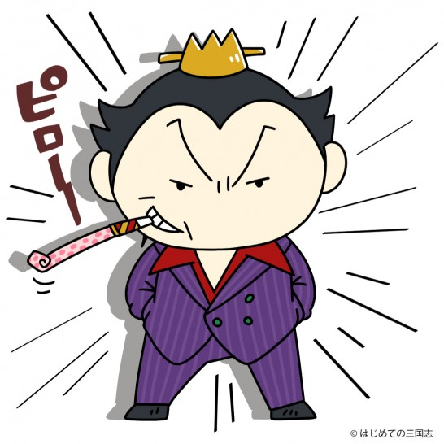
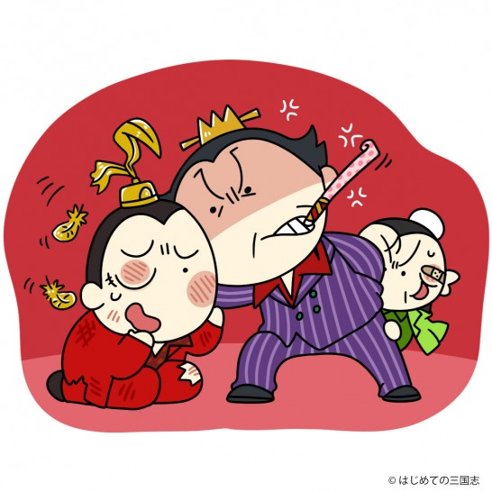

| #君主論 (桃園出版 三国舎) | |
| はじめての三国志 & kawauso | |
| TOUEN SHUPPAN SANGOKUYA (2017) | |
■#君主論 プロローグ
皆様、こんにちは、桃園出版 三国舎 はじめての三国志編集部編集長kawausoです。
本日は、弊社の作品、「はじめての君主論」をお買い上げ頂き有難う御座います。
さて、読者の方の中には、どうして、三国志サイトが場違いな君主論を出すのか？
疑問を持たれている方もいらっしゃると思いますので、この場をお借りし、
「はじめての君主論」制作の意図と狙いについて、簡単にご説明致しまして、
巻頭のご挨拶と代えさせて頂きたいと思います。
■どうして三国志なのに君主論なのか？
はじめての三国志は、主として三国志の記事を配信している業界最大手のサイトです。
それがどうして、三国志とは大きく違う、君主論などを出版したのか？
この点について、これから説明致します。
皆様、御承知の通り、君主論は１６世紀のイタリア、フィレンツェの人物、
ニッコロ・マキャヴェッリが執筆した作品であり、時代も世界も三国志とは、
大きく隔絶してしまっています。
しかし、にも関わらず、その思想やドライな統治の手腕においては三国志、
特に、合理主義者で冷酷なリアリストと言われた曹操（そうそう）の戦略や戦術に
酷似した部分が至るところに散見されました。
例えば、マキャヴェッリが所属したフィレンツェ共和国が自前の軍隊を持たず
港町ピサの攻略において、当初は傭兵の軍隊を頼り、次にはフランス軍を頼って
いずれも振り回され、ピサも攻略出来ず、これら借物の兵力で周辺を掠奪され
ただ、憎悪だけを買って敗退してしまった事がありました。
これに懲りたマキャヴェッリが傭兵や他国の軍隊ではなく
自前の軍事組織を持つべきであるという結論に至り、共和国に対して、
フィレンツェ共和国軍を持つように提言し採用されています。
一方で、曹操も当初は、諸侯の寄せ集まりである反董卓（とうたく）連合軍に参加し、
利害も考えずに諸侯を尊皇心で動かそうとして、諸侯のエゴと衝突し失敗、、
後に、この失敗を教訓に、青州黄巾賊を味方に引き入れる事で自前の軍隊を持ち
実力を蓄えていく点が共通しているのです。
■君主論を使って三国志を解説する試み
しかし、考えてみれば、それもその筈で、１６世紀のイタリアも３世紀の中国も
圧倒的な力を持つ大勢力が存在せず、小勢力がどんぐりの背くらべをしていて、
その周辺では、イタリアの場合には、フランス、スペインが、中国の場合には、
羌族や烏桓、匈奴のような遊牧民族が虎視眈眈と侵略のチャンスを狙い、
極めて天下が流動的であり、明日どうなるか？が全く見通せない時代でした。
そのような中でマキャヴェッリは、弱小諸侯がいかにすれば、生き残って強大化し
イタリア全域を支配する強力な君主になれるかをシュミレーションしましたし、
曹操の台頭は、まさに弱小諸侯であった曹操が、持てる手練手管は全て活用し、
中華の覇者になった点において、マキャヴェッリの行ったシュミレーションを
まさに、１３００年の昔に実践したと言えます。
１３世紀も時代は離れていますが、曹操はマキャヴェッリの理想であり、
マキャヴェッリは曹操のような覇王がイタリアに出現する事を願い、
君主論を書いているのです。
ならば、妖精と化したモータン（曹操孟徳☆５０歳）がナビゲーターの
kawausoと共に、マキャヴェッリを尋ねて、お互いの思想や政治を語ったら、
面白いものが出来るのではないか？と私は考えました。
いわば、はじめての君主論は三国志を君主論的に解説する試みなのです。
■必要とみれば非道も辞さない 悪を飲みこむ両者のリアリズム

マキャヴェッリも曹操も必要と見れば、非道も辞さないリアリストの観点が
まるで示し合せていると思える程に共通しています。
それは、乱世というものが人の欲望で出来ており、人はキレイごとを好みながら
実際にはエゴイストであり、強者に靡き、弱者を踏みつけるという、
悲しい心理を持っている事を、両者がいやと言う程に理解しているからです。
武力や暴力を使わずに、秩序が維持できる太平の世の中になるまでは、
必要と見れば非道も辞さず、徹底して敵対勢力を粉砕し人民の上に苛烈に君臨する。
「愛されないなら恐れられよ」 という君主論の有名な格言がありますが、
徐州虐殺をやってのけた冷酷な曹操が、一方で、人民の生活の向上に努めて、
三国で最も高い国力を保持した事と不思議と重なって聞こえるのです。
曹操もマキャヴェッリも本来、残酷非道な人間ではありませんが、必要とあれば
鬼にも悪魔にもなる事が乱世を制するには必要だと理解していたのです。
■乱世を治める為に、敢えて非道を為した曹操

それは、やむを得ざる悪であり、生来からの残酷非道な暴君とは違います。
どこまでもキレイごとを唱えて滅んでも、誰も褒めてはくれないし、
むしろ、強く冷酷である事 が、人心を集める事だってあったのです。
今回、君主論においては、曹操の苛烈な処置が、天下を制する為には、
やむを得なかった必要悪であった事をコミカルに織り込んでいます。
どうか、目を背けたくようなリアリズムの裏に潜んでいる覇者としての
曹操の苦しい心中まで、汲み取って頂ければ幸いです。
前置きが長くなりました、では、はじめての三国志プレゼンツ、
はじめての君主論をお楽しみ下さい。
目次
遠大な計画を立て、貴族や臣民の目線がそちらに釘づけになるようにする
そもそも『君主論』って何？
地球上で唯一、時空を超える事が出来るライターkawauso、そんな彼が、
相棒のマスコット、モータン（曹操孟徳☆５０歳）を連れて、世界中の偉人に
突撃インタビューをしていくよ。
栄えある第一回は、君主論を書いて政治のリアリズムを説いた１６世紀の
イタリア人、ニッコロ・マキャヴェッリに会いに来たよ。
さあさあ、どんな話が聞ける事やら、楽しみだね！
※え？世界○○物語かって？なにそれ美味しいの（汗）
舞台は１５１３年のイタリア、フィレンツェ
ミュイイイーーーーーーーン・・
石畳の上に、kawausoとモータンが姿を現す。
モータンは定番のkawausoの肩に乗っているスタイル
モータン「ここはどこじゃ？」
kawauso「ここは、１５１３年後半のイタリア、フィレンツェだよ
この時代のイタリアは、フランスのシャルル８世の軍事侵攻、
サボナローラの宗教支配を経て、それから色々ありー・・
共和制が復活した不安定な時期だよ」
モータン「ガイドブックの棒読みか、やる気ないのぅ」
kawauso、マキャヴェッリの自宅を過激に訪問
kawauso「えーっと、マキャヴェッリ、マキャヴェッリ、、この家だな・・
すいませーん、、あれ、鍵が掛ってるや」
モータン「当たり前じゃ、、アポもないんじゃから」
kawausoは、持参したリュックから大ハンマーを取りだす。
モータン「おい、、何をする気じゃ！」
kawauso「そーれーーーーー！」
鈍い音を立てて、家のドアの鍵は壊れた。
kawausoは何事もないかのようにドアを開けて中に入る。
モータン「おい！わし、無関係じゃからな！（焦）」
マキャヴェッリ「なんだ！なんだ！強盗か！！」
kawauso「はっはっは、御心配なく、怪しい者ではありません。
私は２１世紀から来た、kawauso、こちらの変な生き物 はモータンです」
kawausoは、大ハンマーを肩に背負ったまま自己紹介した。
マキャヴェッリ「こ、、殺される・・ｶﾞｸﾌﾞﾙ」
マキャヴェッリって何者？
マキャヴェッリ「いやーそうですか、、玄関のドアを破壊されたので、
私はてっきり強盗だとばかり・・」
kawauso「まさか、私はそんな野蛮人ではありませんよ（笑）」
笑い合う、変な二人にモータンは微妙な表情を見せる
モータン「こりゃ、kawauso、笑っておらんで、何しにきたか
説明せんか」
kawauso「そうだった、、マキャヴェッリさん、
実は、我々は２１世紀の歴史サイト、はじめての三国志を代表してやってきたのです。
あなたが書いた君主論とは、どういうものか分りやすく説明して下さい」
マキャヴェッリ「なんと、、まだ上書していない、私の書斎にある本の
タイトルを知っているとは、これは、私の本が広く世界で読まれるという証拠
分りました、しかし、その前に、君主論を書いた私、
ニッコロ・マキャヴェッリについて説明しましょう」
kawauso「わーい、面倒くさーい」
外交官、軍事顧問としてフィレンツェで活躍したマキャヴェッリ
マキャヴェッリ「私は、１４６９年、フィレンツェ共和国で、弁護士の家に
産まれました、貧しくはありませんが、あまり裕福だったわけでもありません。
私が青年期を送った頃には、メディチ家がフィレンツェを支配していましたが
１４９４年にフランス王、シャルル８世がイタリアに侵攻した事で、
イタリアは激動し、修道士、サボナローラの神権政治を経ても混乱は、
静まりませんでした。
１４９８年、２８歳の私は、ピエロ・ソデリーニ政権下で第二書記局長になり
軍事と内政を担当し、さらに十人委員会に所属し統領の秘書官にもなりました。
自分で言うのもなんですが、私は外交官、そして軍事専門家として有能で
海のないフィレンツェが雄飛するには港町、ピサを手放してはいけないと
論文で訴えて認められ、軍事顧問になった程なのです」
モータン「統領の秘書、、わしで言えば尚書令の荀彧（じゅんいく）みたいな地位か？」
kawauso「ふーん、それからどーなったの？」
傭兵に頼り失敗したフィレンツェ
マキャヴェッリ「フィレンツェは、傭兵隊長、パオロ・ヴィテッリを
総司令官として、私も十人委員会代表としてピサ攻略にあたりましたが、
パオロは城壁を砲撃で破壊し砦を一つ落とすと、退却を考え始めました。
市街戦では、ピサ人の猛反撃が予想され兵の大損害を恐れたからです。
こうして、傭兵に頼ったピサ攻略は無残な失敗に終わってしまいます・・」
モータン「そうじゃろな、、部曲（私兵）を頼りにしたんじゃろ？
あいつらは、自分の兵が減少するのを好まん、わしらの時代も同じじゃ
反董卓（とうたく）連合軍の大半の軍閥共は、本気で董卓と戦う気が無かった」
フランスに頼り、さらに失敗するフィレンツェ
マキャヴェッリ「はい、愚かな事でした、傭兵は自分の利益が第一で、
フィレンツェの為に命を賭けるつもりは無かったのです。
困ったフィレンツェは、フランス王、ルイ１２世と交換条件でナポリ攻略に
資金と騎兵を出す代わりに、共にピサを攻めるように盟約を取りつけます。
しかし、ルイ１２世はパオロ以下でした、フランス兵と傭兵の混成軍は
こちらの指示には従わず、好き勝手に振る舞った挙げ句、
フィレンツェの軍事顧問を拉致し身代金を要求する有様でした。
ピサの周辺では、フランス軍と傭兵の混成軍は掠奪に熱心なだけで、
城内には突入せず、我が軍のピサ攻略は、また失敗に終わったのです
おまけにルイ１２世は、一方的にフィレンツェとの同盟を破棄したので、
ピサや周辺の親フィレンツェの都市まで敵になったフィレンツェ共和国は、
弁明と同盟継続の為にフランス本国まで使者を派遣するザマで、、
その使者というのが、何を隠そう私でして、内心はらわたが煮えました・・」
kawauso「劉備（りゅうび）に漢中の張魯（ちょうろ）を討ってもらおうと
国内に招き入れて結局、国を奪われた劉璋（りゅうしょう）みたいなもんだな」
マキャヴェッリ「私は、傭兵と外国軍に頼った事がピサ攻略の敗因と考え
国防軍を編成する事を上申して認められますが、その軍隊が威力を発揮する前に
１５１２年、ソデリーニ政権は、アルゴン王フェルナンド１世の後ろ盾を受けた、
メディチ家によりフィレンツェを追われ、私もクビになったのです」
君主論はイタリアを統一する王が出現する事を願って書かれた！
マキャヴェッリ「私は、在野で執筆活動に入る事を余儀なくされました。
そこで、私はイタリア半島を統一するような覇者の出現を願い、
私が長い外交官生活の中で培った経験を、実践的な帝王学の書として
新しい覇者に上程しようと考えたのです」
kawauso「ふーん、なんか苦労した結果、書いた本なんだ」
モータン「惜しいのう、わしの時代に産まれていれば、
中華統一に大いに使ってやったのに」
君主にも、様々な種類がある
kawauso「という事は、君主論は理想的な君主を産み出す為に書かれた
実践的なテキスト、そういう理解でいいの？」
マキャヴェッリ「いや、厳密に言うと違います、帝王学としての君主論は
大昔から沢山書かれたけど、それは君主を理想化して綺麗事だけを述べるか、
君主の権力の掌握過程を無視して、同じようなパターンを押しつけるもの・・
しかし、病気に例えれば、分かる通り、一口に足が痛いと言っても、
炎症を起こした足を温めれば痛みは増幅するし、筋肉を痛めているのに、
強くマッサージすれば症状は悪化する事は道理です。
君主と言っても、様々なパターンがあり、それを把握しないで
闇雲に善政を施しても、政権を維持する事は出来ない
私の君主論は、まず、君主のタイプを規定する事から始めています」
モータン「ほお、面白そうじゃの、聞かせてくれ」
君主のパターンは２つ、世襲の君主と新しい君主
マキャヴェッリ「この世界には、国家の形態は大きく二つです。
一つは民衆の代表の自治による共和制、もう一つは君主制です。
私の著書は君主論なので、ここでは君主制を説明します。
さて、この君主制には、世襲的な君主と新しい君主があります」
kawauso「世襲君主と新しい君主？」
マキャヴェッリ「世襲君主とは、前の君主から主に血縁により
権力を移譲される君主です、この君主において統治は極めて容易です。
臣民は君主に懐いており、家臣も歴代仕えていて厳罰や恩賞を使わなくても
代々の君主が行った政治から逸脱しないで手堅く統治すれば、
政権を全うする事は難しくありません
また、仮に不幸にして政権を失っても、新しい支配者に不備があれば、
比較的容易に政権に返り咲く事も可能になるのです。
つまり、余程の暴君でない限り、政権は安泰という事です」
モータン「安定していた時の後漢じゃな、霊帝のような暗君でも、
一応、最期まで政権が維持された」
kawauso「献帝も、董卓（とうたく）や李傕（りかく）・郭汜（かくし）が
酷過ぎたから民衆に見捨てられず、曹操の傀儡としてだけど王朝を維持したっけ」
マキャヴェッリ「一方で新しい君主は、そうはいきません。
それが実力で成り上がるにしても、陰謀で前君主を追い落すにしても
新君主と臣民の間には信頼関係はなく、臣民は隙あれば
これを引きずり降ろそうと構える事になります。
もちろん、元の君主の部下達も表面上は従っているふりをするか、
各地に免れて、再起のチャンスを臣民と共にはかる事になります。
新しい君主がそれを鎮圧するという事は、必然的に臣民を損なう事であり
領内に憎悪と軽蔑をまき散らす事になります。
おまけに新君主は味方が少ないので、それを失うまいと思うあまりに
部下や同盟主を命令に従わせる力がどうしても弱くなります。
それは、部下に横暴な振る舞いを許す事になり、掠奪や虐殺などが
発生しても、これを充分に制止できない事になります。
これは、部下や同盟主にまで嫌われれば、もはや身の置き所がなくなる
危機感から生じてしまうものです。
こうして、新しい君主は、臣民に叛かれ、元の君主の部下にも
叛かれ、自らの味方を命令に従わせる事が難しく世襲の君主に比較して
その統治には大変な困難が伴うわけです」
モータン「なんだか、董卓を思い出すのぅ、献帝を擁立しても、
元からの後漢の家臣は叛いていたし、最初から洛陽を焼いてしまって
民心は掴んでおらんし、だからこそ、部下の西涼兵にしか頼れず、
掠奪は放置して、叛く者は見せしめで殺して恐怖で抑えた」
マキャヴェッリ「まさしく、それは、新しい君主に該当しますし、
部下にしか頼れず機嫌を取るばかりで掠奪を制止できないなら
憎悪と軽蔑が一気に広まり、間も無く失脚するでしょう」
kawauso「オガオガ言って、飯食って寝てるだけかと思えば、
董卓も結構、大変だったんだなぁ」
君主が生き残る為に、どうしても避けるべきレッテル
モータン「辛いのぉ、新君主、、わしは一からじゃから、
もっと大変じゃが同情するわい」
マキャヴェッリ「そうです、新君主が権力を維持するのは世襲君主よりも、
ずっと大変ですが、それでも、絶対に避けるべきレッテルがあります」
kawauso「絶対に避けるべきレッテル？」
マキャヴェッリ「先ほども言いましたが、憎悪と軽蔑の二つのレッテルです
君主たるものは、別にケチと思われようが、スケベと言われようが、
チビと思われようが、冷酷と恐れられようが構いません。
しかし、憎悪と軽蔑だけは買ってはいけないのです」
kawauso「じーーーーーーっ・・」
モータン「何を見ておる・・・・・・
わしはチビでもケチでもスケベでもないわ！」
マキャヴェッリ「憎悪は、君主により財産を奪われたり、身内を殺されたり、
婦女子を掠奪された臣民が君主に対して感じる感情です。
それは、君主に復讐せずには治まらない意味で、恐怖などより危険です。
そして、軽蔑とは、君主が酒や女に溺れる、けた外れのギャンブルにハマる
あるいは、自分で政治決定を下せず、部下によって政治を動かされる。
法に照らして処罰すべき者を処罰できないで留めておく、
または、見せ掛けの温情で、頻繁に恩赦などを行う等で発生します。
臣民に憎まれれば、常に反乱が起きるリスクを抱えますし、
軽蔑されれば、臣民は君主を見捨てますから部下に叛かれればオシマイ
ですから、憎悪と軽蔑を被った君主で命を全うした者はいません」
でも、場合によっては、民も殺すし部下も誅殺するんじゃ？
kawauso「でも、ちょっと待って、元々味方が少ない新君主では、
軽蔑は兎も角、憎悪を買わないのは無理じゃないかな？
反抗的な民衆や叛いた部下は、やはり排除しないと自分を守れない」
マキャヴェッリ「確かに、新君主が一切の憎悪を買わないで済むのは、
不可能であると言えるでしょう。
であるならば、憎悪は一回で終わらせ、だらだら繰り返さない事です」
モータン「ほう、、」
マキャヴェッリ「つまり、百日かけて、毎日一人ずつ反逆者を処刑するのではなく
一日で百名の反逆者を処刑してしまう事です。
それも、徹底的に血も凍るような残酷さで決行しないといけません」
kawauso「どうして？」
モータン「恐怖で震えあがらせ、叛く気を失わせる・・」
マキャヴェッリ「そうです、圧倒的な恐怖の前には臣民は反抗できず、
震えあがり、自らがその対象にならない幸運を神に感謝するでしょう。
そして、ここからが重要ですが、残酷な手法で反逆者を一括して粛清した後は
一転して善政を敷き、二度と同じような処刑を行ってはなりません
そうする事で、臣民の記憶からは、嵐のような処刑の記憶が次第に消え、
新君主の善政を受け入れ、従順に従う気風が産まれます」
モータン「つまり、董卓のように、だらだらと処刑を繰り返さず、
一回で全ての反逆者を処刑し、後は善政を敷けば、憎悪は最小で済む
そういう事じゃな、マキャヴェッリよ」
マキャヴェッリ「そうです、臣民を殺す事は悪徳ですが、
やむを得ない時は、冷酷に一度で終わらせるのです
これこそ、私が考える君主のリアリズムなのです」
君主が頼りにすべきは、臣民か貴族か？
マキャヴェッリ「君主にとっては、その支配地域に二つの階層があります。
一つは権力を持つ貴族層、もう一つは個々では権力がない臣民です。
この二つの階層に対する対応を誤っても政権は維持できません」
モータン「ワシの場合には、地方と中央の名士層と人民という事になるか」
kawauso「君主論的には、どちらが優先されるの？」
マキャヴェッリ「それは臣民です、理由は簡単で、
臣民にはこれという恩恵を施す必要がありません。
ただ、毎日を安定して送れるようにすればいいだけです。
そして、人口において臣民は圧倒的ですから臣民を味方に出来る君主は
存在を脅かす危険の大部分から開放される事になるわけです。
一方で貴族は、人口では圧倒的に少ないにも関わらず、
非常に貪欲で満足するという事を知りません。
これを満たすには、君主は財産を損なう事になるでしょう。
さらには、貴族は権力者であり、種々の特権を持ち臣民を搾取するので
君主が貴族の機嫌ばかりを取ると憎悪の対象になります。
ですので君主としては、貴族に憎まれても、臣民に憎まれる事は
絶対に避けねばならない事です」
kawauso「でも、貴族に憎まれると、陰謀で殺されたりしない？」
マキャヴェッリ「確かに貴族に憎まれれば、陰謀を企てられるでしょう。
しかし、陰謀というのは、１００立てて１０も成功しないものです。
陰謀者に勇気と成功の確信を与えるのは、臣民が君主を憎んでいる場合だけ・・
そうでないなら、反乱を扇動しても乗る臣民はいない事になります。
仮にそこで陰謀を強行して君主が除かれても臣民は、
新しい君主を憎悪する事になり統治は容易ではありません」
モータン「さっきの世襲君主と新君主の違いになるんじゃな？」
kawauso「なるほど、臣民が君主を憎んでいないなら陰謀が成功する
確率が下がるし、成功しても臣民が従わないから統治は難しいのか」
マキャヴェッリ「なにも貴族に憎まれろとは言いませんが、賢明な君主は、
臣民に貴族を憎ませるように仕向け、逆に自身には懐くように振る舞うものです。
こうすれば、貴族と臣民を憎しみあわせ、両者の利害が一致しないように
仕向ける事が出来、貴族は臣民の憎悪から身を守る為に君主の力に頼り、
逆に臣民は自らに味方してくれる君主を讃えて貴族を牽制するでしょう。
結果、君主は己の地位を安泰に導けるのです」
kawauso「本当の味方なんか君主にはいなくて、貴族と臣民を利用して
自分の盾にしているって事だね」
モータン「まあ、、そうじゃが、あっさり言うのぅ・・」
おべんちゃらを言う家臣を避ける方法
マキャヴェッリ「君主は万能である事が建前ですが、実際には、
一人の人間が知る事には限りがあります。
また、自身は最善だと信じる決断でも、えてして人間は自分に甘く、
他人には厳しい評価を下すものです。
そこで、合理的に考えて、君主は自分以外に誠実なアドバイスを行う人間を
近くに持ち、必要な場合にはアドバイスを受ける必要があります」
モータン「ふむ、、その通りじゃが、それを逆手に取り、
実際には君主にすり寄り、おべんちゃらを使い判断を誤らせる佞臣という
存在が産まれるが、それはどうやって取り除く？」
マキアヴェッリ「それには、君主が４つのポイントを守る必要があります。
第一に、評判の確かな人材を選び、その人物のみに助言を許す事、
第二に、その人物の発言を遮らず威圧的にならず忍耐強く聞く事、
第三に、その発言に不誠実が混じっていれば表情に出して怒る事
第四に、君主が必要な時だけ助言させ、それ以外は許さない事
この４つのポイントを守るなら、有象無象の人間の
いい加減なアドバイスを回避して、賢者を採用できます。
賢者も、誠実な発言をすれば採用され不誠実なら疎んじられますから、
アドバイスはより正確で厳しいモノになります。
そして、アドバイスの主導権を君主が握る事で、限度を越えて、
君主を操縦しようとする人間の介入を抑える事が出来るでしょう」
モータン「おお、荀文若を思い出した、わが子房よ・・」
kawauso「理屈はそうだけど、これバカな君主ではできないよね？」
マキャヴェッリ「もちろんです、一般論として巷では、
賢臣が名君を造るなどと言いますが、あれは正しくありません。
何故なら名君でなければ賢臣のアドバイスを聞きわける力がなく、
例え１００人の賢臣がいたとしても、それを役立てる事は出来ないからです。
私の君主論は、出来ない君主をマシにする為に書いているのではなく、
全イタリアを統治できるような偉大な君主に役立てる為に書いているので、
ダメな君主の役には最初から立ちません」
モータン「ふふふ、そうじゃろう、えっへん！」
kawauso「なんで、モータン（曹操孟徳☆５０歳）が照れてるの？」
勢力を伸ばす君主とそうでない君主の違い
マキャヴェッリ「ところで、一口に君主と言っても、版図を広げて覇者になる存在と
自分の領地を守るのに精一杯の存在がいますが、これらの違いはなんでしょう？」
kawauso「あれでそ、無能か？そうでないか？そういう違い？」
モータン「自分の意のままになる軍隊を持っているかどうか？」
マキャヴェッリ「モータンの言う通りです。
勢力を伸ばす君主とは、自分の意のままになる軍隊を保持して動かすだけの
財力と統率力を持っている君主を意味するのです。
平時においては、或いは何十年の泰平の下では、法や秩序が人間の行動を支配しますが
すべてが崩壊した戦時においては、差し当たり君主の身を守るのは軍隊の力です。
自分の軍を持っていない場合、領土を拡大するにしても、領地を守るにしても
その君主は、他人の軍事力を当てにするしかありません。
それは、自分の将来を他人の思惑に委ねてしまう判断であり、
成功する確率が低いばかりか、しばしば自身が依存する他人の軍事力に、
振り回される結果になるでしょう。
ですから、自前の軍事力をもたない君主は、領土を拡張できず、
必然的に領地に籠り、臣民の忠誠だけを頼りにしないと生き残れないわけです」
曹操は君主論のセオリーで覇者になった
モータン「その通りじゃの、、振り返ってみれば、わしは３５歳で、
反董卓連合軍に参加したが、本気で董卓と戦う諸侯は一部しかいなかった。
２０万もの軍勢が結集しておったのに・・
わしは、何度も献策したが、それが自らの兵を損なう行為である以上、
あの連中が軍議や宴会だけに興味を示したのは当たり前じゃった
わしは、他人のふんどしで相撲を取る愚かさに、あの時、気付いたんじゃ」
マキャヴェッリ「その通りです、軍議や宴会というのは、戦場で血を流す事を
避けたい君主達の言い逃れの砦です。」
モータン「それゆえ、わしは力を求めた、幸い、兗州牧の地位が転がり込み
青州黄巾賊３０万を投降させる事に成功し、それを自軍に組み込めた、
わしが自前の軍隊で領地を守り勢力を伸ばせるようになったのは、それからじゃ」
マキャヴェッリ「それは素晴らしい、まさに私の君主論のセオリー通りです
まさにモータンは、我が国のチェーザレ・ボルジアに比肩します」
kawauso「なるほど、幾ら有能でも、自前の軍隊を持たない君主は、
常に他人の軍事力を当てにして動く、不安定な立場に置かれるって事か・・
確かにモータンと違って、劉備はあちこちで活躍した割には、
自分の軍隊が無かったから、勝っても負けても、放浪する羽目になったっけ」
モータン「玄徳など、孔明が部下になってから気が付いた位じゃからなｗ」
kawauso「あの人は、デカイ事を言う割に足下が見えてないと言うかｗ」
君主と大臣の正しい関係とは？
kawauso「孔明の話が出たから、ついでに聞くけど、君主にとっての軍師というのは
君主論では、どういう存在であるべきなの？」
マキャヴェッリ「前述した通り、君主は万能である事が建前ですが、
実際には、君主の能力は突出している部分があれば、低い部分が存在し、
つまり、能力にはムラがあるのが普通と思わないといけません。
さらに、人は自分の判断に甘く、他人には厳しいのが常ですから、
他人であり見識のある大臣、あなたの言う軍師を近くに置いて、
真摯に意見を聞き、有益である事は容れる事が重要です」
モータン「ふむ・・」
マキャヴェッリ「君主論では、君主は３つのタイプに分けられると書いています。
すなわち、１、自ら悟る事の出来る人物、２、他人の助言により察する人物、
３、自ら悟る事も助言により察する事も出来ない人物です。
この中で、１の人物には大臣は必要ありませんが、滅多に出現しません。
そして、３については、大臣をつける意味はなく、つまり処置なしです。
しかし、多くの場合、君主とは１ではないにしても、２に該当し、或いは、
訓練によって２に近づく事は可能であると思います。
この点において、大臣の助言は、君主を１に近づける事ができ有益です」
モータン「わしは、１・・いや、２かな、、荀彧には随分諌められたしの」
kawauso「１は、光武帝とかになるのか、、三国志の群雄は２が大半で、
後は、判断力が落ちて３になってしまうパターンだね」
モータン「この場合、その軍師が君主にとって有益な存在であると見極める
方法には、どんな手段があるのじゃ？」
マキャヴェッリ「それは、大臣が君主の権利を預かっている事を忘れず
君主の為に政治をしているかどうか？で見極める事が出来ます。
いかに有能でも、君主の権利を使って私益を図ったりする大臣は、
やはり有益な人物とは言えないので、それは信頼してはいけません
もちろん、それと同時に君主は、大臣が私益を図らないように、
充分な恩賞と名誉と責任を与えてやり、大臣が君主の権利を使って
私益を図らなくても少しの心配もないようにする事です。
そうすれば、大臣は私益を図る事なく、また君主の利益を損なえば、
自身も失墜する事を理解するので、君主と一心同体で職務を遂行するでしょう」
モータン「つまり、軍師には、充分な恩賞と名誉と責任を与えて、
権力を私的に使わせないようにし、ヘマをしたら処罰する事を明示して
他の事を考えさせず君主の為に一心不乱に働かせるように仕向けるのじゃな」
侵略した土地を統治する方法は３つある
マキャヴェッリ「君主が、固有の法律によって治められる土地を征服した場合、
これを有効に統治する方法は３つあります。
①全てを完全に破壊してしまう ②君主が乗り込んで直接統治、
③その地域の法慣習を尊重する形で、その土地から支配者を選んで間接統治」
モータン「ふむ、わしは袁紹（えんしょう）とその一族を冀州から追い払った時には、
拠点を許（きょ）から鄴（ぎょう）に遷したな」
マキャヴェッリ「それは、袁紹なる敵君主の影響が強かったからですか？」
モータン「そうじゃ、冀州の民は袁家に懐いており、ワシには懐疑的じゃった。
故にワシは自ら統治する事にしたのじゃ」
マキャヴェッリ「賢明な判断です、君主が強力な力で統治すれば、その支配地で
反乱を起こすのは難しいので安定して統治されるでしょう。
しかし、その土地が共和制を採用する土地である場合には、②と③は上手くいきません」
kawauso「なんで？」
マキャヴェッリ「共和政体では誰が統治するにせよ、自治の気風が強いので
不満が溜まりやすく、何十年も反動的な抵抗が続きます。
ここでは、君主が恩恵を施しても圧政を敷いても、自由を求める市民の抵抗は
止む事がなく、何らかの事で支配が除かれると、すぐに共和制が復活します。
ですので共和政体については、①を採用して徹底して破壊を行い自由な政治体制の
土壌を破壊するのが、もっとも最短で安全な方法です」
モータン「恐ろしい話じゃのう・・」
マキャヴェッリ「逆に、征服した土地が君主制によって支配されていて、
臣民が長年の統治に慣れていて、土地の軍隊が君主の専属である場合には、
臣民は戦争に熟達しておらず、元々従う事に慣れているので従順です。
こうしたケースでは、③の方法でも統治は難しくないでしょう」
kawauso「・・琉球国」
全くの新君主は茨の道、、だけど、、
マキャヴェッリ「君主の中で最も茨の道を歩むのが、一市民から
君主の地位に上るケースです。
上からの引き立てや幸運、個人の才能など必要な要素が幾つもありますが、
いずれにせよ、新しい君主は既得権益を握る階層から激しい攻撃を受けます。
何故ならば、新しい君主は、自らを守り富を造り出す制度を制定しないと
いけないわけで、その制度から既得権益者は除外されてしまうからです。
一方で、新しい制度が定着して、市民の不安が払しょくされ、新しい君主の
味方とする勢力が充分に報われるまでは、味方は疑心暗鬼の中にあります。
つまり、この新しい君主について行って大丈夫なんだろうか？
あるいは、旧勢力に付いた方がいいのではないか？と揺れ動きます。
ですから、確実に既得権益を奪われる旧支配層は団結して、
死に物狂いで抵抗するのに、新君主を守る勢力は甚だ頼りないのです」
kawauso「ありゃりゃ、モータンのケースだ」
モータン「思いだすのぅ・・大変じゃった、周囲は敵ばっかで、
劉備は助けてやったのに噛みつくし」
マキャヴェッリ「このような新しい君主は、どうしても実力装置を持つ必要があります。
つまり軍隊です、この実力装置を持たない新しい君主は、自分の保護を他所に頼むので、さらに困難な道を選択する事になり、ほとんどの場合、その地位を保てないでしょう。
モータンの場合、青州兵という実力装置を掴み、それを万全に統制した事が、
君主の地位にあり続けた要因だと言えるでしょう」
kawauso「董卓みたいに軍を好き放題させてたら明日は無かった？」
マキャヴェッリ「そうです、軍隊を万全に管理し、侮られず、必要なら処罰し
決して自分に叛かせない人間のみが君主の地位を全うします」
モータン「えっへん！ま、青州兵はワシの手足じゃからの」
マキャヴェッリ「一方で、新しい君主にはメリットもあります。
他人の力で君主の地位に就いた一市民に比較して政権が安定してくれば、
その統治は逆に容易になるからです。
他人の力で君主になると、君主の地位には就けるものの、後ろ盾がいなくなった後は
その権力を維持するノウハウもなく、実力装置もなく、大変な運と才覚に恵まれない限り、かならず没落する事になります。」
kawauso「そっか、お前、明日から君主な！と言われるようなもんだしね
どう統治していいのか想像も出来ないけど、一から上るなら、ノウハウを
積み重ねていくから、トップに立てれば、後は楽なんだ」
劉表や劉禅の没落の理由、軍事に関心がない君主は滅びる
マキャヴェッリ「君主というのは、軍事にのみ関心を持つべきです。
他の事は学者や家臣にさせても構いませんが、軍事だけは疎かには出来ません。
軍事を軽視するようになり、逆に別の分野にのめり込むようになると
軍事は、君主の手を離れて重臣の手に移る事になり、国に政変が起きます。
そうならないとしても、軍の士気を維持できず、組織の新陳代謝がないと
日進月歩する周辺国の軍に遅れを取り、決定的に敗北します」
モータン「思いだすのは、荊州の劉表（りゅうひょう）じゃのう・・
荊州に学者を集めて、アカデミックな都市にしたはいいが、軍事を忘れた。
ワシだって詩文は好きじゃが、あくまで片手に矛、片手に書刀じゃ 」
kawauso「劉禅とか劉璋も当てはまるね、どっちも軍事に関心がなく
家臣に丸投げ状態だった」
マキャヴェッリ「アカイアの君主、フィロポイメンは、その文学的な資質を
後世に高く評価されていますが、それだけの人物ではありません。
彼は、部下と連れだって遠出しても、土地の地形を話題に戦略上の議論を
積み重ね、軍事を忘れる事がありませんでした。
そうであればこそ、アカイアの軍制を改革し、精強なスパルタ軍を撃破できました」
kawauso「どこにでもモータンみたいな人がいるんだね」
君主は有徳な人のフリをすればよい
マキャヴェッリ「こちらは、いわゆるこれまでの帝王学の教科書と私の君主論の
大きく違う点ですが、私は君主とは必ずしも有徳の人である必要はないと思います
もう少し、あざとい言い方をすれば有徳の人に見える必要があるだけです」
モータン「ほお、興味深い・・」
マキャヴェッリ「君主と言えど、万能ではありません。
また世界を支配しているというのでない限り、周辺には敵も存在します。
さらには、そのような敵に通じている勢力も国内にあるかも知れません。
にも関わらず、評判を気にして有効な措置を打たずに、ただ徳を頼りにすれば
必ず、その地位を追われる事になるでしょう」
kawauso「ふーん、具体的にはどういう風に振る舞えばいいの？」
マキャヴェッリ「具体的な方法としては、刑罰を与える時は大規模かつ迅速に行い
恩恵を施す時には、少しずつ長く行う事です。
多くの臣民にとって君主は近くで触れ合える存在ではありませんから、
臣民にとっての君主は偶像に過ぎません。
常に近くにいて、君主の生態を知っている貴族とは違い、臣民に対しては、
寛大で徳があり、威厳に満ちて、親しみやすい君主のイメージを造るのです」

モータン「立派な君主を演じてみせるということじゃな」
マキャヴェッリ「例えば、裁判所を設置して、重臣を裁判官として、
刑罰は全て、裁判所から出させて、臣民の恐怖と憎悪を負わせながら、
恩赦は君主の名で出して、臣民の信頼を勝ち得るように仕向けます。
もっとも緊急事態では、どうしても臣民の悪評を買う事もあるでしょうが、
別に君主が冷たく、親しまれずに恐れられたとしても前述した通り、
憎しみと軽蔑さえ買わないようにすれば大した事はありません。
何故なら、悪評は続かなければ一過性のものであり臣民に取っては取り立てて、
恩賞がなくても財産を奪われたり、殺されたりせず、重税を課されないなら、
それは君主に感謝すべき素晴らしい時代だからです。
このような平穏な日々が続くなら、いつしか悪評は消え偉大な君主として
讃えられる時期がやってくるでしょう」
kawauso「モータンも、戦争中に食糧が足りなくなって升を小さくして
兵士に支給する食糧を減らして、兵士の不満が溜まった時、
食糧担当官が勝手に升を小さくして食糧を横領した事にして処刑し、
兵士の不満を鎮めた事あるよね？」
モータン「やな事を思い出すのォ、仕方が無かったんじゃ」
マキャヴェッリ「処刑された担当官はお気の毒ですが、そこでモータンが
正直に自身が食糧を誤魔化したと言っても、暴動が起きて軍が崩壊するだけで
誰にもメリットはないでしょう。
残酷ですが、一人の命で軍が保たれたのですから、それがベターな選択です」
モータン「・・・そういう事じゃ、、君主はキレイごとでは務まらぬ」
君主は信義を守り、同時に信義を守らない狡猾さが必要
マキャヴェッリ「話をさらに深めていくと、つまり、正直であり慈悲深く
誠実であり、信心深いというのは、それを保有している事は君主に取って
美徳ではありますが、それだけではいけないという事です。
つまり君主は、自分の不利益になる事について、それらを守らず
正反対の事が平然と出来るようにならないといけません」
kawauso「君主は、必ずしも正直であるべきではないという事？」
マキャヴェッリ「信義とは、人間の徳ですが、この世は悪徳に満ちています。
君主が信義を守ったとて、隣国は？貴族は？臣民は信義を守るのか？
その答えは時として、守ったり、守らなかったりでしょう。
つまり、自身にとって都合が良い時には信義を守る事を主張し、
そうでない時には知らん顔をするというのが現実というものなのです。
そのような社会で君主が地位を維持するのは、人間のみならず獣の狡猾さが
絶対に必要になるのです。
それは、罠を見破るキツネのずる賢さと狼を退ける獅子の大胆さです。
君主は、常に注意深さと大胆さを兼ね備えていなければならないのです。
現実として、この世界には、何一つ信義を守らないにも関わらず、
常に信義を口にして、他人を騙して地位を保全する人間は幾らでも見出せます」
モータン「ふむ、、というより生き残るのは、そーいうヤツばかりじゃ・・」
マキャヴェッリ「ですから、君主とは、勤めて慈悲深く、信義を守り、敬虔であり
誠実でありながら、必要なら、それを簡単に反故にして、守らない理由を
幾らでも挙げて自身を正当化する狡猾さを持たないといけません」
kawauso「君主もなかなか大変そうだね・・」
戦争においては、残酷さを気にする必要はない
マキャヴェッリ「古代のハンニバルやスキピオ、最近ではアルゴン王、
フェルナンド１世に至るまで、英雄と呼ばれる人々には共通性があります。
それは、戦争においては、とことん残酷であったという事です。
平時と違い、戦争においては、君主は残酷さを気にする必要はありません。
いえ、極論すれば、残酷でないなら自軍を統率する事さえ出来ません。
戦場においての残酷さは、自軍を強力に統制し、敵の反抗を衰えさせ
自国においては、強くて威厳のある君主像のイメージに一役買います」
kawauso「そうなの？敵に対しては温情を掛けた方があとあとは良くない？」
マキャヴェッリ「それは、戦争が全て済んで、敵の反抗が無くなってから
施すべき事例だと思われます。
戦争中の君主は、とことん残酷であればこそ、敵は恐れ、味方は畏怖し、
軍隊は一つの機械となって機能します」
モータン「さっき、マキャヴェッリが言っていたように、
好意というのは、人の内側から自発的に出るもので、余りあてにはならん。
しかし、恐怖は外側から押しつけ他人をコントロールするもの、
自発的に好意を持つ人間はいても、自発的に恐怖する人間はいない。
つまり恐怖の方が、敵を操るには都合がいいものなのじゃ」
kawauso「ううむ、、深い・・」
隣国同士の戦争に中立を保つのはバカである
kawauso「今度は、自分とは関係ない周辺国同士の戦争か・・」
マキャヴェッリ「隣国同士の戦争においては、グズグズして敵味方の
いずれになるかを表明しないのは最大の愚策です。
どうしてかと言えば、どちらにも加担しないという事は、勝者にも
敗者にも、どちらにも恩を売れず、憎しみを買うだけだからです」
モータン「なるほど、交戦国のどちらかを支持して援軍を送れば
支持した側が勝てば恩を売る事が出来るし、負けたとしても、
戦勝国の憎悪から敗戦国が、こちらをガードしてくれるわけか」
マキャヴェッリ「そうです、勝負は時の運ですから、次の場面では、
敗戦国が戦勝国を負かすかも知れません。
そうすれば、こちらは何もしないで隣国に恩義を売れるのです」
kawauso「なんか自分が関係ない戦争では、中立でいるのがいいかな？
と思っていたけど、そうじゃないんだね」
マキャヴェッリ「また、この場合、交戦国同士が明らかに自国よりも
格下の場合には、より一層の熟慮が求められます。
この場合には、滅びて当然の国を滅ぼす側に加担すべきだからです。
そして、首尾よく行けば、恩義から戦勝国は自国の思い通りになりましょう」
kawauso「残しちゃいけない側を残してアジャパーにならないように
援助した側が敗北してカッコ悪い事にならないように、この場合には、
必ず勝つ方に加担するというわけだね」
やむを得ない場合以外、自国より強い国とは同盟しない
マキャヴェッリ「同盟は、よくよく考えないといけない問題ですが、
第一に自国より強い国とは、やむを得ない場合以外には同盟してはいけません」
kawauso「え？なんで、強い国と結んだ方が安心じゃないの？」
マキャヴェッリ「それは違います、自国より強い国と結べば相手の意向に、
こちらが振り回される事になります。
経済であれ、軍事であれ、こちらより強い国が同盟の名の下に介入してくるのは
軍事力抜きで、自国が支配を受けるようなものです」
モータン「ふむ、わかる、実質同盟とは、こちらより弱い国と結び、
相手をこちらの意のままに振り回す道具という事じゃな？」
マキャヴェッリ「そうです、同盟を結ぶなら、こちらより格下と結び、
こちらの意向で相手を振り回すようにすべきです。
また、同様に隣国を攻める時に、外国軍の援軍を頼りにするのは、
これもまた、避けなければいけません」
kawauso「これも外国軍に振り回されるから？」
マキャヴェッリ「二つの危険があります、外国軍はこちらの指示では動かず、
作戦が大幅に遅れてしまう恐れがある事、もう一つは、自国と外国の援軍の不和に
つけ込んで敵国が外国軍と結んでしまい、自国が攻撃される恐れがある事・・
このような気苦労を考えれば、外国の援軍を当てにして遠征をするなど
無謀な試みとしか言えないでしょう」
モータン「逆に、他国が遠征の為に、自国の軍事力を当てにしたら、、
それこそ、好き放題の取り放題という事じゃな？」
マキャヴェッリ「はい、逆から見ればそうなります、わがフィレンツェは
フランスという外国軍を当てにして、多くを失いました」
遠大な計画を立て、貴族や臣民の目線がそちらに釘づけになるようにする

マキャヴェッリ「君主の支配力が脆弱である場合には、反目した貴族が
反乱を起こしたり、臣民に不穏な空気が漂う事もあります。
このような場合には、水面下で入念に準備し遠征を行い、貴族や臣民の目を
外側に向けて、内側では団結させるのが肝要です。
もちろん、最終的には戦勝する事で、締めくくる必要はありますが、
常に遠大な計画を企てて、国内の不満分子が団結できないようにして、
その背後で反乱の芽を摘むというのが賢明なやり方と言えましょう。
遠征は臣民に取っても勝っている限りは娯楽であり、日頃の不満を解消し
君主に尊敬を向ける要素になるからです」
kawauso「２１世紀でも、そうやって外に敵を造って国民を纏める国ある」
モータン「まあ、こういう事は不変なのかも知れんのぅ・・」
運命論は弱者の戯言である
マキャヴェッリ「私の君主論は、リアリズムの極致だと言われるでしょうが
一方で、私はこの著作にニヒリズムは加えませんでした」
モータン「ニヒリズム、、つまり運命論の事か？なにをどうしようが、
それは運命で定まっておるという、儒者共が好きなアレか・・」
マキャヴェッリ「運命論者は、フランス、そしてスペインにいいように
蹂躙された、我がイタリアの状況でさえ、仕方がないと切り捨てます。
しかし、仕方がないなどというのは、全力を持って運命に対処した人間にのみ
許される事であって、座して何もしない者に許される言葉ではない！」
kawauso「あ、熱いねーー」
マキャヴェッリ「それは、例えば、洪水に例える事が出来ましょう。
洪水は、ありとあらゆるものを破壊して流し去りますが、洪水に全ての運命を
託す事になるのは、何の対策も打っていない人間だけです。
しかし、実際には、人間は洪水を予想して、堤防を築いて排水路を巡らし
河の流れをゆるやかに変化させて洪水を起きにくくしています。
そうする事で、意志を持つ人間は、すべての運命を天に投げるのではなく、
時代の主人公として、打つべき手を打っていけるのです。
人間は努力して運命を変えられるのであって、ただ洪水のような運命に
流されるままではありません！」
モータン「その通りじゃ、運命とは自分で切り開くモノ、
それを放棄した者が全てを棚に挙げて、不勉強を運命の責任にするのじゃ」
マキャヴェッリ「ママミーヤ！ モータン！私達は気が合いそうですね」
モータン「こりゃ！寄るな、ワシゃ男は大嫌いじゃ（怒）」
モータン＆kawausoのまとめ
※現代に戻り、テラスでアイスカフェ・オレを飲みながら
kawauso「どーだった、モータン、君主論？」
モータン「ふむ、、どこでも乱世では似たような考えが産まれるもんじゃの」
kawauso「モータンとマキャヴェッリ、かなり共通点が多かったもんね」
モータン「しかし、君主論は出版されてから、賛否両論噴出するんじゃろ？
ワシの時代から１３００年後でもそうなんじゃから、ワシが長い間、
乱世の奸雄としてしか理解されなかったのも分かる気がするのぅ」
kawauso「なんだかんだで人はキレイごとが好きだからねー」
モータン「ところで、マキャヴェッリの望んだイタリア統一は、
いつ達成されたのじゃ？」
kawauso「うーんとね、１８６０年代だから、マキャヴェッリの時代から
３００年以上も後だね・・」
モータン「イタリアも大変だったんじゃのう・・」
君主論 あとがき
皆様こんにちは、桃園出版三国舎 はじめての三国志編集部編集長kawausoです。
今回は、弊社の書籍「#君主論」をお買い上げ頂き有難う御座います。
さて、「#君主論」の感想はいかがだったでしょうか？
面白かったでしょうか？ つまらなかったでしょうか？或いは、間違い、訂正、
内容の不備、改善点、もしくは、次回作へのご要望などがありましたら、
お手数ではございますが、こちらの投稿フォーム に記入して頂けましたら幸いです。
私どもスタッフは読者様の御意見を真摯に受け止め、さらにレベルの高い作品を目指し
再び、読者様が手に取っていただけるような楽しい作品を産み出して参ります。
はじめての三国志編集部では、今後も、三国志のみに留まらず春秋戦国時代や、
日本の戦国時代、楚漢戦争、或いは西洋史に至るまで、幅広く、読者の皆様の知的欲求、
難しい歴史を分かりやすく、面白く読みたいという希望を叶えるべく精進致します。
歴史は、本当はもっと面白く、分かりやすく、エンターテイメントになれるジャンルで
それを一人でも多くの読者の皆様に届けるのが、私共、はじめての三国志編集部の
使命であると考えるからです。
この度は、弊社の「#君主論」をお買い上げ頂き、誠に有難う御座います。
また、次回作、別の作品で再び、読者様にあえる日を念じつつ・・
桃園出版 三国舎 はじめての三国志編集部編集長 kawauso
#君主論
2017年7月25日 初版発行
著者：kawauso（はじめての三国志）
挿入絵：プンち（はじめての三国志）
発行社：桃園出版 三国舎
【注意】
この電子書籍の著作権は、すべて「はじめての三国志」ならびに「桃園出版 三国舎」に帰属します。
本作品の全部あるいは一部を無断で複製・転載・配信・送信したり、ホームページ上に転載することを禁止します。
本作品の内容を無断で改変、改ざん等を行うことも禁止します。
また、有償・無償に関わらず本作品を第三者に譲渡することはできません。
三国志の世界観や登場人物を『楽しく・ゆるく・わかりやすく』をモットーに紹介するエンタテイメント系サイトだよ。
毎日22時更新！
【はじめての三国志】
https://hajimete-sangokushi.com/
■はじめての人の為のざっくりとわかる三国志
http://hajimete-sangokushi.link/sangokushi1/
■イラストを豊富に使った三国志武将図鑑データベース
https://sangokushi-memories.com/
■はじめての三国志 Facebookファンページ
https://www.facebook.com/hajimetesangokushi
■はじめての三国志 公式twitterアカウント
https://twitter.com/otoboke3ngokusi
■はじめての三国志 Instagram 公式アカウント
https://www.instagram.com/hajimete_sangokushi/
■はじめての三国志 Pinterest
https://jp.pinterest.com/hajimetesangoku/
■はじめての三国志 Youtube
https://www.youtube.com/channel/UCkOtK1Ml5Kln01WwkCkqmJQ/videos
■はじめての三国志 Ameba TV